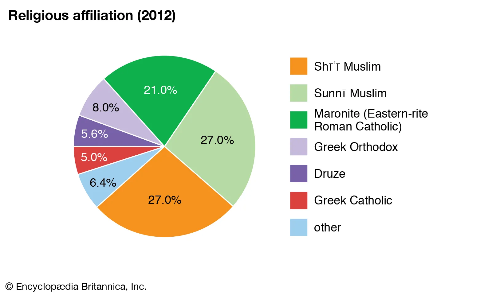
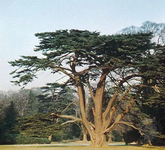

Religion
Perhaps the most distinctive feature of Lebanon’s social structure is its varied religious
composition.
Since the 7th century, Lebanon has served as a refuge for persecuted Christian and Muslim groups. As
religion and government in Lebanon are deeply and formally intertwined, the relative proportions of
the
country’s religious communities is a highly sensitive matter. There has not been an official census
since 1932, however, and the data depicting Lebanon’s confessional composition are variable. In
general
terms, the two largest groups are the Shiʿi Muslims and the Sunni Muslims, each comprising more than
one-fourth of the population. Maronites, a Roman Catholic Eastern rite group that originated in the
region, make up more than one-fifth of the population. A number of other Christian communities are
also
present, including the Greek Orthodox and the Greek Catholics. The Druze constitute a small
percentage
of the population but play an influential role in Lebanese society. There is also a very small
Jewish
minority.
|
 |
Plant and animal life
Lebanon was heavily forested in ancient and medieval times, and its timber—particularly its famed
cedar—was exported for building and shipbuilding. The natural vegetation, however, has been grazed,
burned, and cut for so long that little of it is regenerated. What survives is a wild Mediterranean
vegetation of brush and low trees, mostly oaks, pines, cypresses, firs, junipers, and carobs.
Few large wild animals survive in Lebanon, though bears are occasionally seen in the mountains.
Among the smaller animals, deer, wildcats, hedgehogs, squirrels, martens, dormice, and hares are
found. Numerous migratory birds from Africa and Europe visit Lebanon. Flamingos, pelicans,
cormorants, ducks, herons, and snipes frequent the marshes; eagles, buzzards, kites, falcons, and
hawks inhabit the mountains; and owls, kingfishers, cuckoos, and woodpeckers are common.
Although Lebanon’s diverse and abundant plant and animal life suffered a heavy toll during the
country’s lengthy civil war and subsequent conflicts, the post-civil war period was marked by the
rise of fledgling environmental groups and movements that worked toward the creation of protected
areas and parks in Lebanon’s sensitive ecological areas.
|  |